Solution: Image Search
Answer: UPPERCUT
Written by
Alan Huang
Special thanks to Logan Engstrom and Chris Shallue
This is a puzzle about neural networks. Specifically, it uses one trained to transfer art styles from fourteen source paintings to any target image, and one trained on a large corpus of photo captions to describe what it sees.
Our panel of judges is made up of the fourteen artists who created each work. When consulting an individual judge, he will provide you with a rendition of your submission in the style of his work. For example, here is Hokusai's rendition of a doge.
You might consider putting your subject into better perspective by adding something in the background.
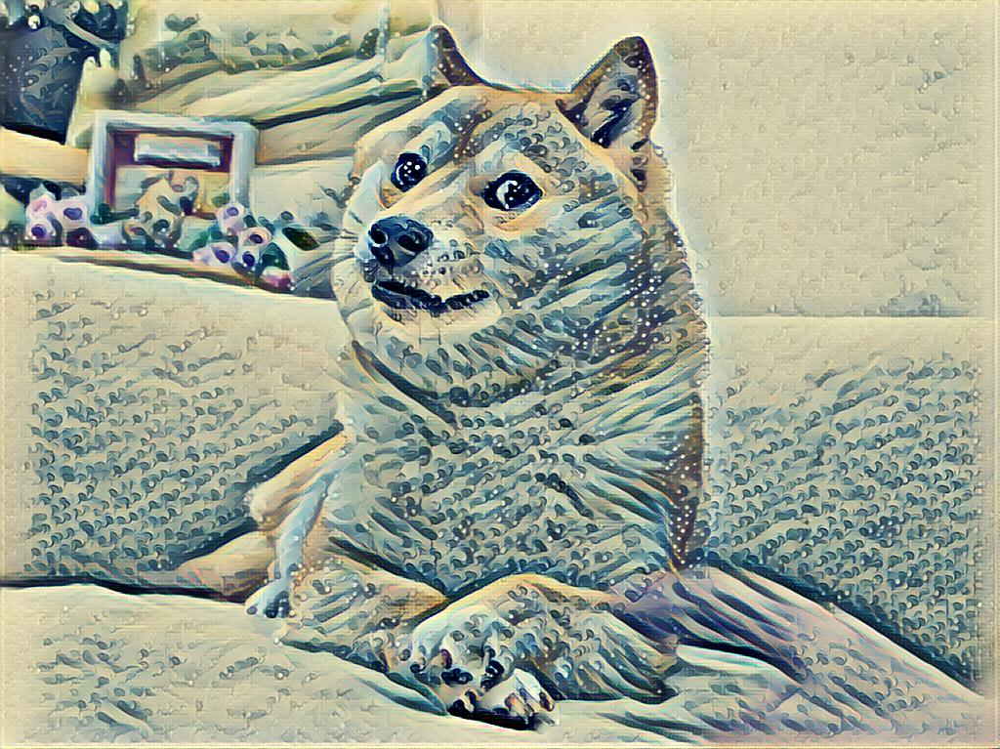
Each judge also has a particular object he is thinking of, which is always* found somewhere in the source work. If you send in a picture without a judge's object in it, he will provide a clue as to its identity.
* In the case of Broadway Boogie Woogie, there are no concrete objects represented in the painting, so this puzzle takes the view that it is based on the street grid of Manhattan as referenced in the title.
| Artwork | Artist | Object | |
|---|---|---|---|
| 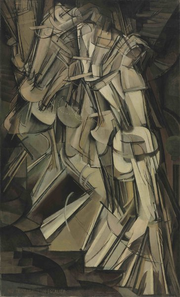 | Nude Descending a Staircase | Marcel Duchamp | staircase |
| I don't know what Judge 8 is on about. I painted one of these forty years before he did. His doesn't even make sense! | |||
| The staircase being descended, as in the title. Duchamp is throwing shade at the younger M. C. Escher below, who also drew a bunch of staircases. | |||
| 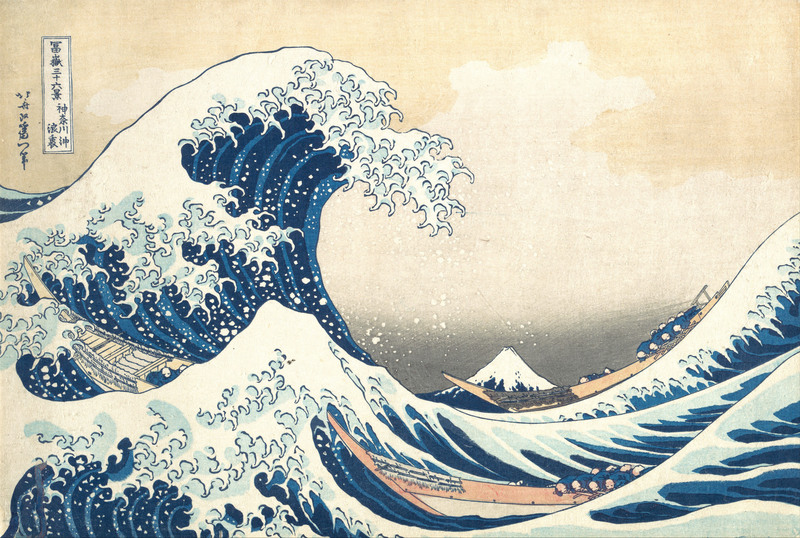 | The Great Wave off Kanagawa | Hokusai | mountain |
| You might consider putting your subject into better perspective by adding something in the background. | |||
| Hokusai refers to Mount Fuji, which he has placed at a contrasting scale with the wave before it. | |||
| 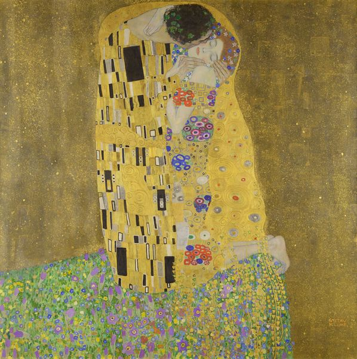 | The Kiss | Gustav Klimt | flowers |
| Please disregard those two. I believe love beats hate, anyway... when you paint your lover, put these in her hair. | |||
| The figure on the right has flowers on her clothing, the ground beneath, and around her hair. Klimt is waiting for Duchamp and Escher to kiss and make up. | |||
| 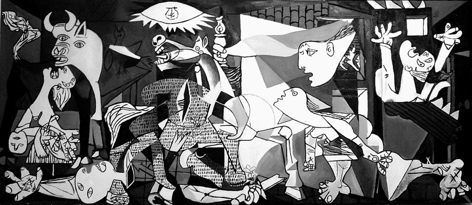 | Guernica | Pablo Picasso | horse |
| I always like to center my compositions around an animal. | |||
| A panicked horse figures prominently in the center of Guernica. | |||
| 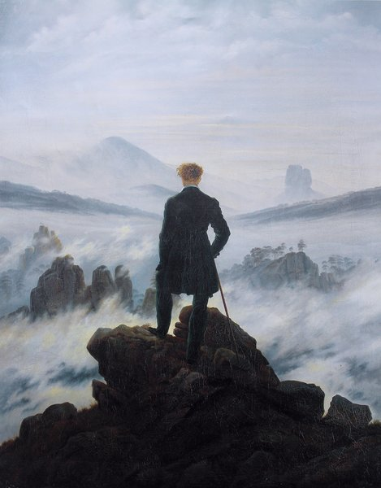 | Wanderer above the Sea of Fog | Caspar David Friedrich | coat |
| It's not only a good centerpiece for the painting, it's also just common sense when you're up that high. | |||
| As it turns out, there really aren't that many distinct things in this painting, so it came down to the coat or the walking stick. | |||
| Barack Obama Hope poster | Shepard Fairey | tie | |
| The wardrobe isn't the focus, but it's what really sells a piece like this. | |||
| For the same reason, this one had to hinge on what Obama is wearing. | |||
| 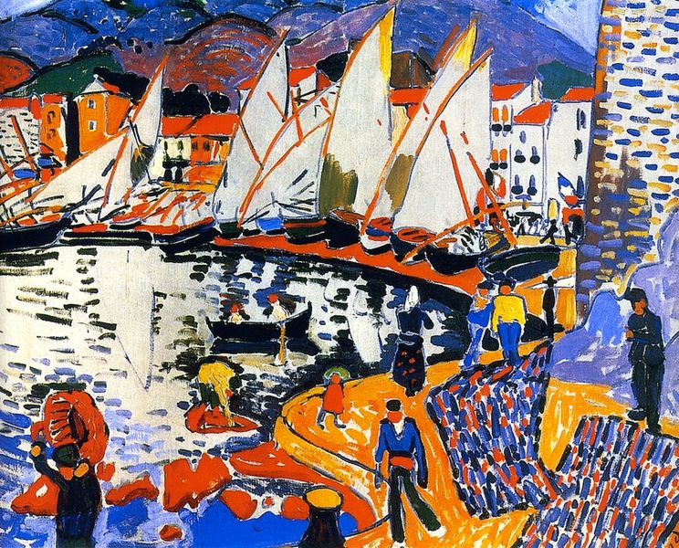 | Drying Sails | André Derain | basket |
| They called me a beast, but could a beast have painted this in the bottom left? I don't think so. | |||
| In the bottom left as indicated, a fisher or dock worker is carrying a large basket. Derain was a co-founder of Fauvism, named after a critic who disparaged them as les fauves (wild beasts). | |||
| 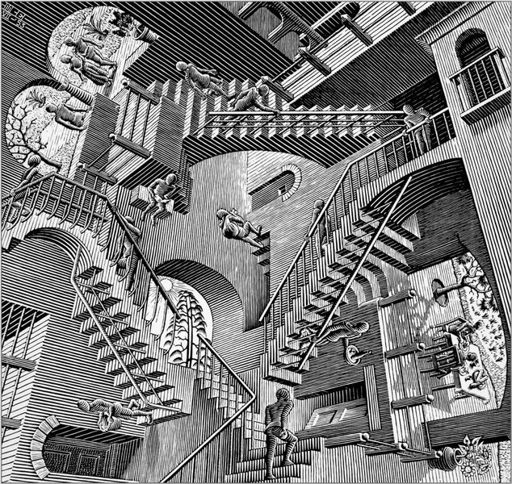 | Relativity | M. C. Escher | bottle |
| You can barely see Judge 1's version even though he titled his painting after it. Plus, I've got something he doesn't: whatever this figure is carrying in the... uh. Bottom right? I think? | |||
| The person descending the stairs toward the bottom right doorway is carrying a tray with a bottle on it. Escher is not very impressed with Duchamp's abstract rendition of a staircase. | |||
| 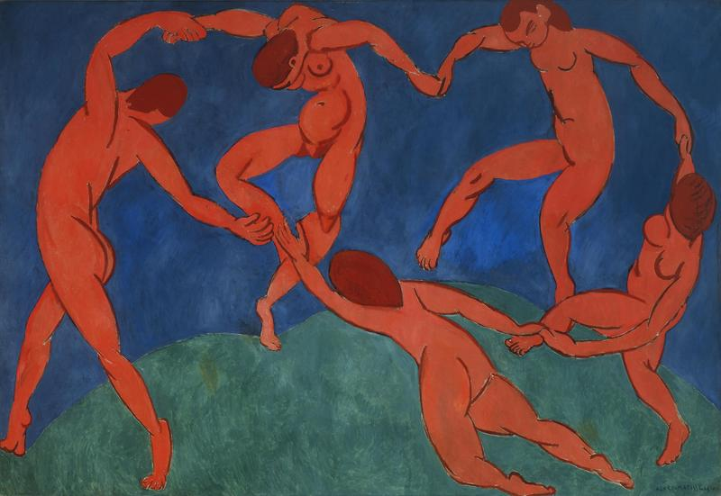 | Dance | Henri Matisse | hands |
| You really just need something that joins all the figures. Something that holds them together. | |||
| There's even less in this painting, so we'll go with a body part that's safe for work. | |||
| 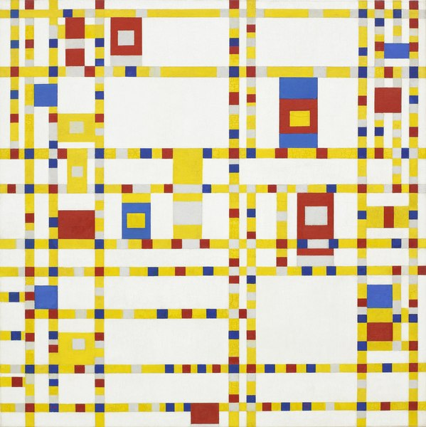 | Broadway Boogie Woogie | Piet Mondrian | cars |
| I know all these little pieces seem abstract, but they do actually represent something, you know. | |||
| And finally the pinnacle of "not much in the painting". Abandoned ideas for this object included roads ("broadway") and dancing ("boogie woogie"). | |||
| 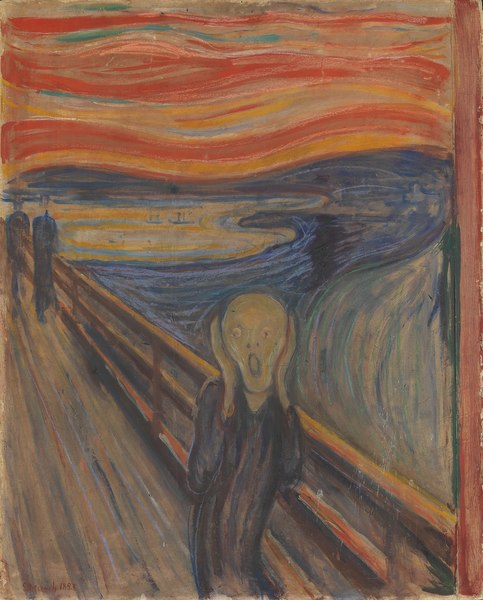 | The Scream | Edvard Munch | boat |
| See, these two things behind me. You probably didn't even notice them, but that's the whole point. | |||
| The figure in The Scream is standing on a bridge or boardwalk. In the body of water behind its head are two small but distinct boats. | |||
| 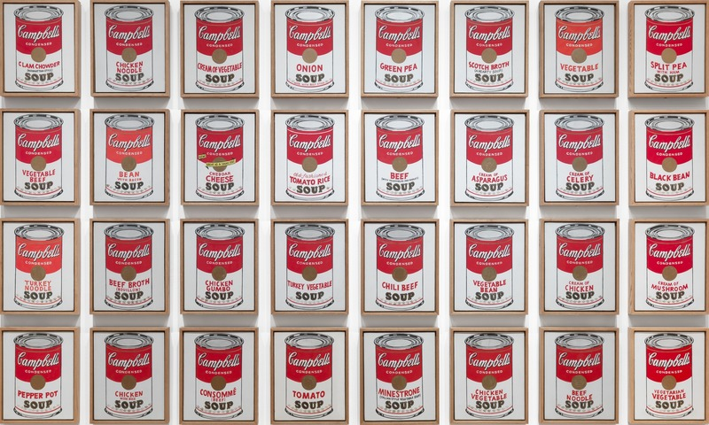 | Campbell's Soup Cans | Andy Warhol | soup |
| Whatever you add, just add as many of it as you can. That's the key. | |||
| Soup is surprisingly hard. | |||
| 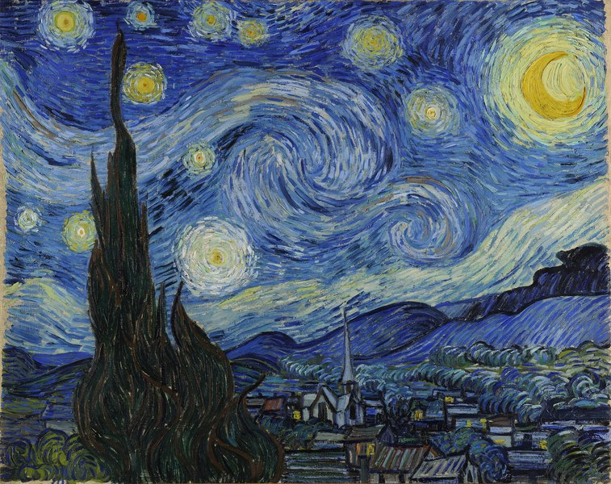 | The Starry Night | Vincent Van Gogh | church |
| I do believe you need something right in the middle to bring the whole composition together. | |||
| A church steeple is visible in the bottom center of this painting. | |||
| 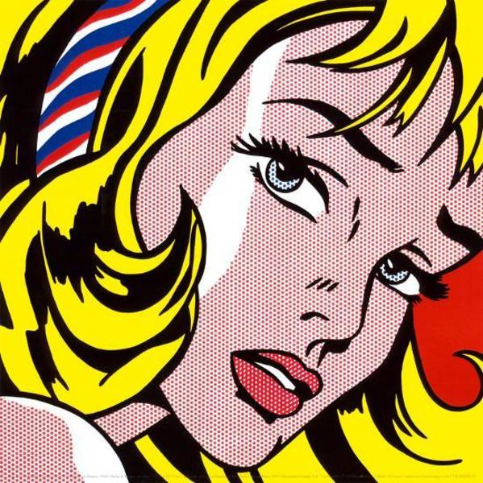 | Girl with Hair Ribbon | Roy Lichtenstein | hair |
| You just need some color to really frame her well. | |||
| The color around the outer edges is provided by the girl's yellow hair. | |||
If you submit an image to the jury containing one judge's object, he will ask you to gain a second judge's support.
Finally, if you submit an image to the jury containing at least two judges' objects, they will each give it a star rating that is actually an index into the artists' names. 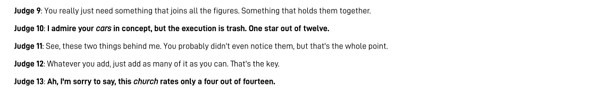
Once you figure out everyone's objects and ratings, the letters in order spell out DUTCH SAM'S PUNCH, which is an UPPERCUT. (There are a few Dutch artists represented here, but none of them is named Sam.)
| Nude Descending a Staircase | Marcel Duchamp | 7/13 | staircase |
| The Great Wave off Kanagawa | Hokusai | 4/7 | mountain |
| The Kiss | Gustav Klimt | 11/11 | flowers |
| Guernica | Pablo Picasso | 8/12 | horse |
| Wanderer above the Sea of Fog | Caspar David Friedrich | 20/20 | coat |
| Barack Obama Hope poster | Shepard Fairey | 1/13 | tie |
| Drying Sails | André Derain | 9/11 | basket |
| Relativity | M. C. Escher | 1/8 | bottle |
| Dance | Henri Matisse | 10 or 11/12 | hands |
| Broadway Boogie Woogie | Piet Mondrian | 1/12 | cars |
| The Scream | Edvard Munch | 8/11 | boat |
| Campbell's Soup Cans | Andy Warhol | 2/10 | soup |
| The Starry Night | Vincent Van Gogh | 4/14 | church |
| Girl with Hair Ribbon | Roy Lichtenstein | 7/15 | hair |
Author’s Notes
I trained several dozen style models while constructing this puzzle. You can see samples of them all here.
I'm sorry that I couldn't include a more diverse set of artists in this puzzle. The requirement that the works be recognizable to solvers who might not be art history buffs* as well as having a distinctive style that transferred well ended up severely limiting the selection.
* The first testsolve group actually did turn out to consist of art history buffs, who blew through it in about ten minutes. I expanded the puzzle as a result, adding some less famous works, and tightened the thresholds on the image description net. Some of the judges still wildly overtrigger, but hopefully this acts as a clue giving you an in to how the puzzle works, rather than just being confusing or letting you bypass half the puzzle. The clues were designed not to give everything away if you hadn't identified the painting, but still avoid a difficulty cliff where the puzzle might become impossible if you didn't know enough art history. The second testsolve group informed me that Google Image Search could often dig up the original work just given a style transfer, which definitely assuaged some of my worries on that point.